Помимо прочих артефактов в игру было добавлено несколько реликтов.
Бонусы, которые дают сборные реликты, приведены уже с учетом составных артефактов.
| Рог бездны (искл. из ГСК) |
|---|
| 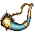 |
тип: разное
При гибели живого отряда в бою призывает на его место отряд Фангармов, который продолжает служить герою и после боя.
Общее здоровье призываемых Фангармов соответствует половине общего здоровья погибшего отряда, но их количество не больше
количества существ в этом отряде. На павших Фангармов Рог не действует. |
| Золотой гусь |
|---|
| 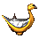 |
тип: разное (сборный)
Собирается из:
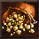
Бездонный мешок золота (разное).
Приносит 1000 золота в день.
+ 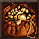
Бездонная сумка золота (разное).
Приносит 750 золота в день.
+ 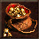
Бездонный кошель золота (разное).
Приносит 500 золота в день.
Приносит 7000 золота в день. |
| Мантия дипломата |
|---|
| 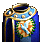 |
тип: плащ (сборный)
Собирается из:
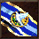
Лента посла (плащ).
Снижает цену, уплачиваемую при сдаче, на 10%.
+ 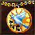
Медаль чиновника (ожерелье).
Снижает цену, уплачиваемую при сдаче, на 10%.
+ 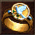
Кольцо дипломата.
Снижает цену, уплачиваемую при сдаче, на 10%.
Снижает цену, уплачиваемую при сдаче, на 30%.
Позволяет сбегать и сдаваться при обороне города и в битвах с нейтральными существами. Увеличивает силу армии героя
в глазах нейтральных существ и Гильдии воров в 3 раза. |
| Кулон отражения |
|---|
|
тип: ожерелье (сборный)
Собирается из:
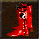
Сапоги противодействия.
Повышают сопротивляемость магии войск героя на 15%.
+ 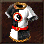
Одеяние равновесия (плащ).
Повышает сопротивляемость магии войск героя на 10%.
+  Колье нейтрализации.
Колье нейтрализации.
Повышает сопротивляемость магии войск героя на 5%.
Повышает сопротивляемость магии войск героя на 50%. |
| Железный кулак огра |
|---|
| 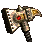 |
тип: оружие (сборный)
Собирается из:
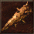
Дубина свирепого огра.
Повышает атаку героя на 5.
+ 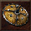
Щит яростного огра.
Повышает защиту героя на 5.
+  Кираса короля циклопов.
Кираса короля циклопов.
Повышает силу магии героя на 4.
+ 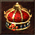
Корона великого колдуна.
Повышает знания героя на 4.
+5 атаки, +5 защиты, +4 силы магии и +4 знаний.
В начале боя накладывает на все дружественные отряды на 50 раундов заклинания Ускорение, Жажда крови, Огненный щит и Контрудар
экспертного уровня. |